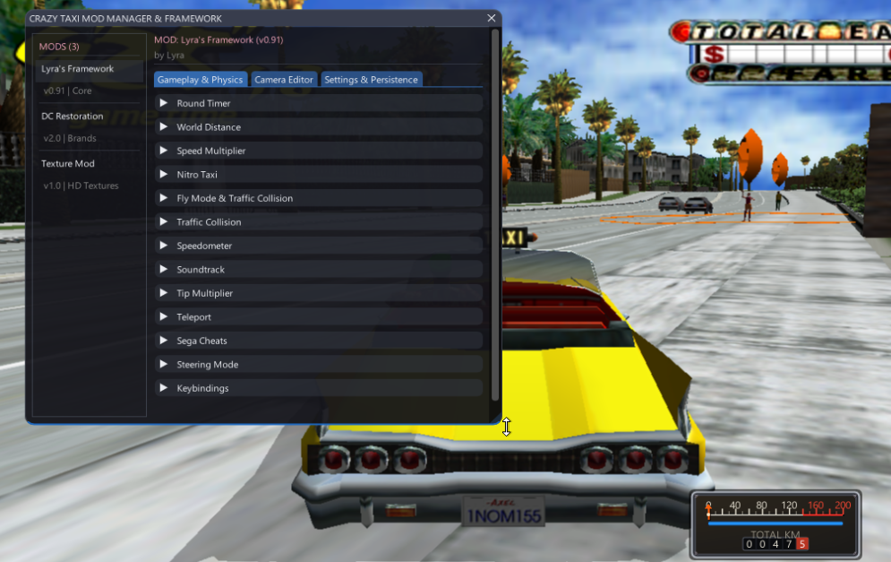
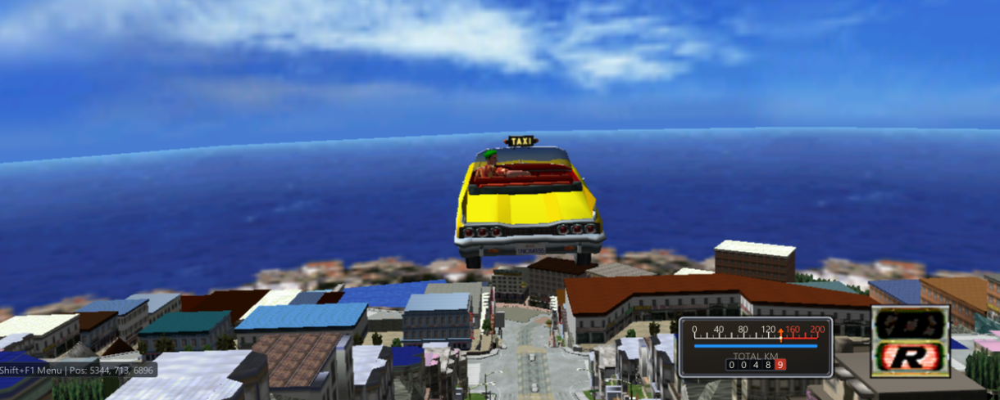
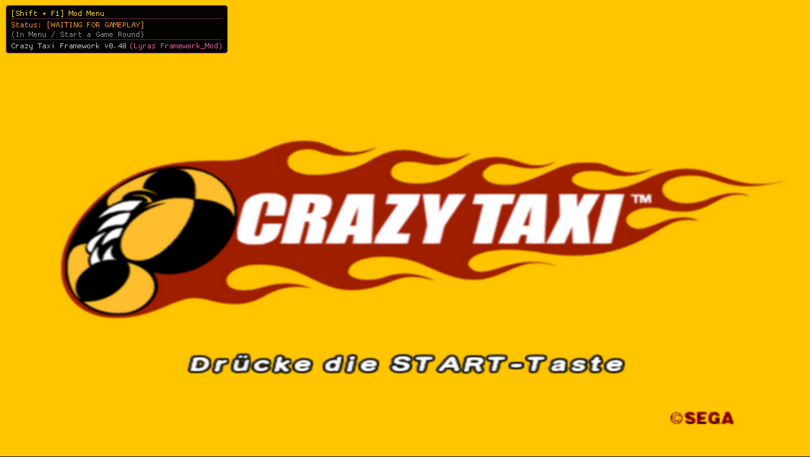

Unofficial, non-commercial fan project: created by fans, for fans. Not affiliated with, authorized, or
endorsed by SEGA Corporation. Crazy Taxi is a registered trademark of SEGA.
Crazy Taxi 1 Mod (CT1 Mod) 2026 • PC Features & DirectInput Enhancement Suite
The definitive PC enhancement suite for Crazy Taxi. Experience 100% authentic Sega Dreamcast audio and brand restorations, 60 FPS unlocked physics, 3D Taxi Flight, Nitro Boost, and real-time 2K texture injection in one clean in-game Mod Menu.
The First True Multi-Mod Loader for Crazy Taxi 1 & Retro PC Games
LFM Crazy Taxi 1 MOD NEW is the first unified Multi-Mod Loader and Manager for Crazy Taxi. Simply drop mod DLLs or custom textures into the mods/ directory: the framework chains and runs every module simultaneously with zero risk to original game files.
Real-time Direct3D 9 in-game overlay: Manage multiple mods, toggle modules,
and tune engine parameters on the fly
Mod Loader Architecture:DirectInput8 Proxy Loader (dinput8.dll) with dynamic module
chaining
Texture Engine Integration:Natively integrated Drag & Drop Texture Modder (v0.88) with real-time 2K HD
injection
Multi-Mod Concurrency:Simultaneous live modules (LFM Framework + Texture Mod + DC Restoration + Community
Submods)
Mod Management:Modular mods/ directory: drop in or remove mods with zero
friction
Runtime GUI Control:In-game DirectX 9 menu overlay with real-time parameter tuning (F7 /
Shift+F1)
Zero Game Tampering:100% untouched game archives (data_little/): clean zero-footprint
uninstall
Universal Compatibility Guarantee
Unlike brittle memory trainers tied to a single build, our mod loader utilizes signature-based PE scanning.
It is verified 100% compatible with modern PC releases and Windows 10 / Windows 11 out of the box.
✅
Plug-and-Play: Drop-in hook in steamapps\common\Crazy Taxi\ or any game
folder containing Crazy Taxi.exe
✅
Windows 10 & 11 Ready: Tested and verified on current Windows versions
✅
Multi-Mod Manager: Load dozens of mods concurrently with zero file overwrites
Flight & Driving Sandbox • Live In-Game Verification
Flight and Driving Mods: Full 3D Taxi Flight, Nitro & Physics Sandbox

Version 1.0 Redesigned Mod Menu: Real-time flight toggles, 4WS physics, HUD settings, and the Barbie Glamour aesthetic option

Full 3D Taxi Flight Mode: Soar high above skyscrapers and the ocean with the integrated vintage speedometer and nitro bar
Full technical overview of all 28 core engine mods, Dreamcast restorations, flight dynamics, and visual toolkits in Version 1.0. Everything is organized into 5 dedicated suites: Dreamcast Audio & World, Flight & Driving, Gameplay & Unlocks, Camera Suite, and Visuals & Modding Toolkit.
Filter Category:
✅
Full 3D Taxi Flight Mode
Take off into the San Francisco skyline with 360° pitch, roll, and elevation control (F).
✅
Nitro Boost & Speedometer HUD
+70% instant acceleration with a retro 0 to 200 km/h gauge and mechanical odometer (Shift / N).
✅
Authentic Dreamcast & Arcade OST
Original licensed soundtrack by The Offspring and Bad Religion, real-world brands (KFC, Pizza Hut, Tower Records).
Bypasses vehicle ground gravity and terrain limits to enable full 3D taxi flight
(Space to climb, Shift/Ctrl to descend) with a calibrated aerial chase
camera and smart auto-landing on passenger drop-offs.
✅ Implemented & Working
1080p Full HD
Video Demonstration: Taxi Fly Mode (Full 3D Flight)
Modify the vehicle's maximum speed limit. Scales vehicle propulsion cleanly up to 220
MPH without physics snapback or modifying ambient NPC traffic vehicles.
✅ Implemented & Working
Verified Working
07
Unlocks
Unlock All Vehicles + Sega Master Unlock
Writes unlock bitmasks to 0x0164fa58 (0xFF) and 0x016aa3c0
(0xFFFFFFFF). Unlocks all cabs, bikes, and Sega Master secrets.
✅ Implemented & Working
1080p Full HD
Video Demonstration: Unlock All Vehicles + Sega Master Content
Defy gravity and fly over skyscrapers and oceans! Spacebar to climb, Shift/Ctrl to descend, calibrated aerial chase camera, and smart auto-landing upon reaching passenger dropoff zones with +8m auto-liftoff.
+70% acceleration Nitro boost (Shift or N / Pad Trigger) complete with a retro 0: 200 km/h gauge cluster in the bottom-right corner, regenerating energy bar, and persistent mechanical 5-drum odometer (TOTAL KM).
Simulates extreme winter driving: preserves 98.5% of lateral momentum per frame, decouples vehicle heading from direction of travel for wild donuts/power slides, and throttles engine torque to 35% to simulate wheelspin on ice.
Bypasses traffic vehicle bounding box collision routines at 0x01661478. Phase cleanly through rush-hour cars, cable cars, and oncoming traffic with zero loss of momentum.
Patches the CRI sound stub at 0x004C9C2A to unlock restored brand dialogue audio lines (e.g. "Take me to Pizza Hut!" and "Take me to the Tower Records store!").
Toggles the native Sega Another Day mode at 0x01662304. Rearranges passenger spawns across the entire city and introduces alternative passenger destinations and crazy detour routes.
Expands the chunk query radius at 0x005A04EC from 1800.0f up to 4000.0f. Eliminates the notorious 40% texture eviction bug where distant buildings lost their textures and rendered blank/gray.
Completely redesigned in-game Mod Menu (Shift+F1) with zero clutter. Includes the optional Barbie Glamour aesthetic with velvet berry backdrops, hot magenta headers, rose-gold buttons, and pink HUD instruments.
Dreamcast Restoration vs Steam: Complete Comparison & Authentic Features
Discover why the PC Steam release felt hollow compared to the 1999 SEGA Dreamcast and Arcade original, and how LFM: Crazy Taxi 1 MOD NEW (v1.0) fully restores every cut brand, song, and voice line while adding modern PC enhancements.
Feature / Content
Original Dreamcast & Arcade (1999)
Steam / PC Re-Release (2011)
LFM PC Mod v1.0 (2026 Restored)
Original Soundtrack
Authentic songs by The Offspring & Bad Religion
❌ Stripped (replaced by generic copyright-free rock)
✅ 100% Restored Lossless CRI ADX audio streaming
Real Commercial Brands
Pizza Hut, KFC, Tower Records, FILA, Levi’s
❌ Removed (replaced with generic fictional shops)
✅ 100% Restored 3D buildings & 2K HD textures
Passenger Voice Lines
"Take me to Pizza Hut!", "Take me to Tower Records!"
❌ Silenced and cut from audio cues
✅ 100% Restored Original passenger dialogue triggers
Framerate & Performance
Standard 60 FPS (NTSC)
60 FPS with micro-stutters & speed bugs on modern OS
✅ Unlocked 60 FPS Stable delta-timing on Win 10/11
Install Guide: Zero-Installer Drag & Drop Setup for PC
The framework requires no installer executable (.exe) and makes zero modifications to original game archives.
Follow the 4 steps or watch the full installation walkthrough below.
Download and extract the LFM release package (Lyras Framwork MOD.7z). The package contains
dinput8.dll and the mods/ directory.
STEP 02
Locate Game Directory
Open the folder containing Crazy Taxi.exe. Fully supported paths include:
C:\Program Files (x86)\Steam\steamapps\common\Crazy Taxi\Or any custom game folder containing Crazy Taxi.exe
STEP 03
Copy Hook & Manage Mods
Drag dinput8.dll and mods/ into the root folder next to
Crazy Taxi.exe. Drop any other mods or texture packs into mods/ to load and manage
them concurrently.
STEP 04
Launch & Play
Run Crazy Taxi.exe. The mod loader automatically hooks in. Press Shift +
F1 (or F7 / F10) at any time to open the in-game mod menu.
Clean Uninstallation:
To completely uninstall, simply delete dinput8.dll and the mods/ directory. Original
game files remain 100% vanilla and untouched.
Input Specifications
Controls & Keybindings
Pre-configured keybindings and input routing designed for responsive keyboard control and cinematic camera
manipulation.
Full 3D Taxi Flight & Nitro Boost
SpaceClimb / Ascend Skyward (Fly Mode)
Shift / CtrlDescend / Glide Downward
A / D or ArrowsYaw Orientation Steering (Flight)
Shift or NEngage Nitro Boost (+70% Acceleration)
AutoSmart Auto-Landing on drop-off (+8m liftoff)
Mod Menu & Overlay
Shift + F1Toggle Mod Menu (Primary)
F7 / F10Alternative Menu Toggle Hotkeys
F9Live Reload Textures (No Game Restart)
Modern WASD Vehicle Driving
WAccelerate Forward (Automatic Gear D)
SBrake / Reverse (Automatic Gear R)
A / DSteer Left / Steer Right
Left ShiftCrazy Dash / Instant Turbo Boost
SpaceHandbrake / Crazy Drift Initiation
3D Freecam Manipulation
Mouse360-Degree Free Look Orientation
W / SMove Camera Forward / Backward
A / DCamera Strafe Left / Right
SpaceAscend (+Y Altitude Vector)
ShiftDescend (-Y Altitude Vector)
Taxi Flight Controls
WASD3D Vehicle Flight Propulsion
SpaceFlight Ascend (+Y Elevation)
Left CtrlFlight Descend (-Y Elevation)
Developer Hub & Memory Engine
Texture Modding & Submod Developer Hub
All memory addresses, pointers, Direct3D 9 pipeline hooks, and C++ developer tutorials have moved to our
dedicated Mod Developer Hub.
C++ Guide
Beginner Submod Guide
Learn how to build standalone C++ plugins inside mods/ that automatically appear in the
Shift+F1 menu with full ImGui widgets and zero device conflicts.
Answers to the most common questions regarding Crazy Taxi PC mods, original soundtrack restoration, Dreamcast
emulation, and game modding guides.
01
How do I mod Crazy Taxi on PC?
▼
Modding Crazy Taxi on PC is 100% plug-and-play with LFM (Crazy Taxi 1 MOD NEW). Simply download the package (Lyras Framwork MOD.7z), extract dinput8.dll and the mods/ directory directly into your root game directory where Crazy Taxi.exe is located, and launch the game! No installers, registry modifications, or file replacements are required. Press Shift+F1 in-game to open the mod menu overlay.
02
How to restore the Offspring music in Crazy Taxi?
▼
The original arcade and Sega Dreamcast soundtrack by The Offspring ("All I Want", "Way Down the Line") and Bad Religion ("Ten in 2010", "The Meaning of Life") is restored automatically. When you place dinput8.dll in the game folder, Feature 09 hooks the native CRI ADX audio streaming engine at runtime, immediately replacing the generic re-release songs with the original high-fidelity arcade tracks.
03
Can you fly in Crazy Taxi? (Full 3D Taxi Flight Mode)
▼
Yes! Feature 19 introduces Full 3D Taxi Fly Mode. By pressing F (or toggling in the Shift+F1 Mod Menu), you bypass terrain collisions to soar through San Francisco skies. Press Space to climb and Shift or Ctrl to descend. A smart auto-landing routine temporarily engages during customer drop-off zones, automatically lifting you 8 meters back into the air so you can continue cruising through the sky seamlessly.
04
How to unlock all cabs in Crazy Taxi PC?
▼
In LFM v1.0, Feature 07 automatically writes unlock bitmasks to memory address 0x0164fa58 (0xFF) and 0x016aa3c0 (0xFFFFFFFF). This instantly unlocks all vehicle options, including the hidden Bike, the Sega Master Rickshaw, and all character special rides without requiring manual Crazy Box challenge completions.
05
Is the Crazy Taxi Steam version the same as Dreamcast?
▼
No, the Steam version differs substantially from the Dreamcast and Arcade original. The Steam version removed the licensed Offspring/Bad Religion soundtrack, replaced authentic commercial destinations (Pizza Hut, KFC, Tower Records, FILA) with generic fictional storefronts, lacks native 16:9/21:9 widescreen support, and suffers from controller deadzone issues. Our LFM: Crazy Taxi 1 MOD NEW (v1.0) suite completely restores all original content on Steam while adding 60 FPS smoothness, 2K texture upscaling, and 3D flight physics.
06
Is the Crazy Taxi mod safe?
▼
Yes, 100%. The LFM framework is an open-source C++ project licensed under Creative Commons CC BY-NC 4.0. It contains zero spyware, adware, telemetry, or third-party wrappers. Because it loads solely via Windows standard dynamic-link library redirection (dinput8.dll), it does not alter executable binaries or save files on your hard drive.
07
How to uninstall Crazy Taxi mods?
▼
Uninstalling is as simple as deleting dinput8.dll and the mods/ folder from your Crazy Taxi installation directory. Because the framework performs non-invasive runtime memory detours, your game returns to completely unmodified vanilla status instantly with zero leftover files.
08
What is Another Day mode in Crazy Taxi?
▼
Another Day is Sega's official alternate passenger layout built into the original arcade engine (memory flag 0x01662304). Enabling it rearranges all passenger spawn points and destination zones throughout the entire city, offering experienced players an entirely fresh, chaotic route challenge.
09
Is there a Crazy Taxi remaster?
▼
While SEGA has not released an official 4K/2K remaster, LFM: Crazy Taxi 1 MOD NEW (v1.0) serves as the definitive community fan remaster for PC. It brings real-time 2K HD texture replacement, chunk streaming fixes, 60 FPS unlocked physics, 16:9/21:9 ultrawide FOV matrices, full 3D flight dynamics, and 100% authentic Dreamcast audio & brand restorations to modern PCs.
10
How to get the original Crazy Taxi on PC?
▼
The best way to play the authentic arcade/Dreamcast experience on modern PC (Windows 10 & Windows 11) is by installing any legally owned PC version (e.g. the Steam release) and dropping the free LFM v1.0 mod package into the game folder. This effortlessly provides the restored original music, authentic real-world storefronts, 60 FPS fluidity, and clean modern gamepad mapping.
11
What is the Barbie Glamour Theme?
▼
The Barbie Glamour aesthetic is a custom visual mode in the Mod Menu (Shift+F1) under Settings & Persistence → Interface. It transforms the overlay with velvet berry backdrops, hot magenta headers, rose-gold accents, and matching vibrant pink HUD speedometer instruments.
12
Does this mod include widescreen, 60 FPS, and Windows 10/11 fixes?
▼
Yes. The framework fixes internal camera projection matrices to deliver true 16:9 and 21:9 ultrawide aspect ratios without horizontal stretching, locks a rock-solid 60 FPS, and includes signature scanning to ensure seamless execution on modern 64-bit Windows 10 and Windows 11 systems.
Releases & Source
Download Framework Suite Version 1.0
Download the compiled release package or explore the complete open-source codebase.
100% free, community-driven fan project: no registration, no paywalls, no ads.
Full C++ source code including Direct3D 9 hooking routines, memory offsets, and build scripts.
Requires Microsoft Visual Studio 2022+ and DirectX 9 SDK.
Encountered an issue, need help with installation, or have ideas for future mod updates?
Submit a message directly to the LFM team via our official AI Support Form.
Version 1.0 Redesigned Mod Menu: Live parameters, 4WS controls, Flight Mode, and Barbie theme toggleFull 3D Taxi Flight Mode: Aerial chase camera overlooking skyscrapers and coastline with vintage speedometer and nitro barDirect3D 9 in-game overlay with live parameter controls and real-time texture reloadingHigh-altitude 360° freecam exploration across the San Francisco map

Arcade title screen demonstrating active framework hook verification